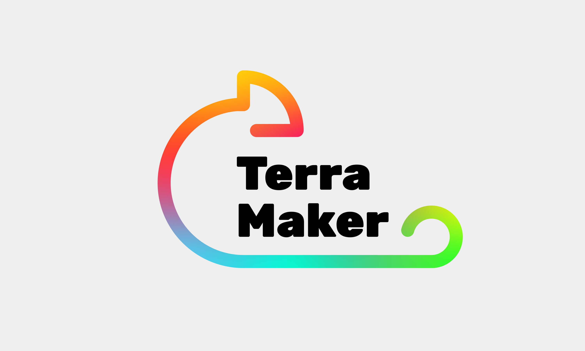
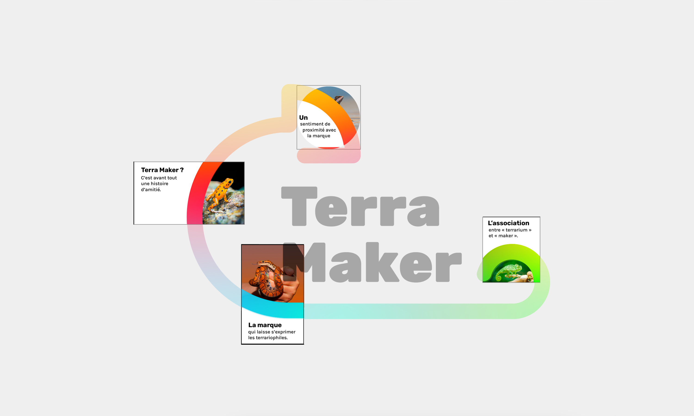
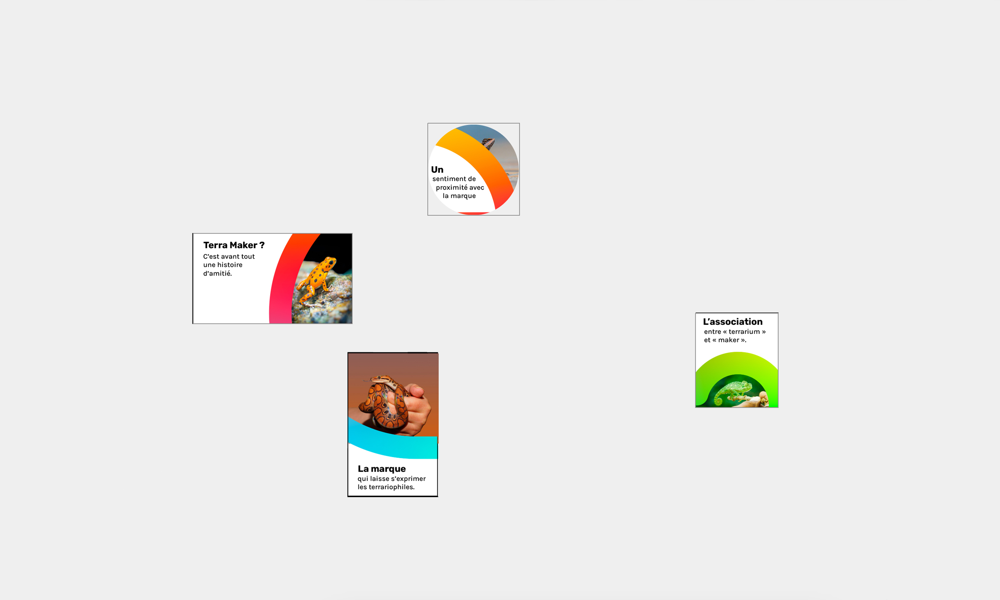
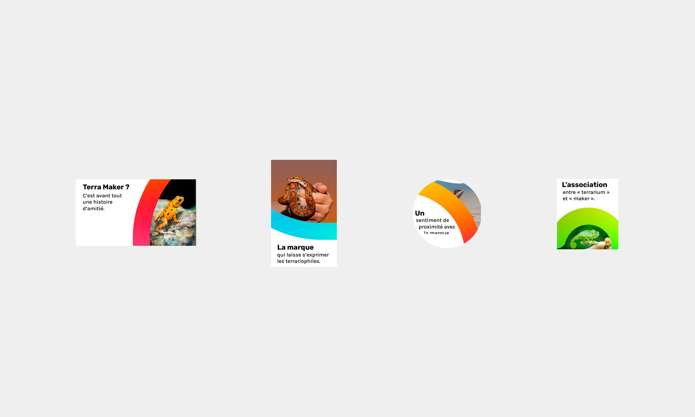
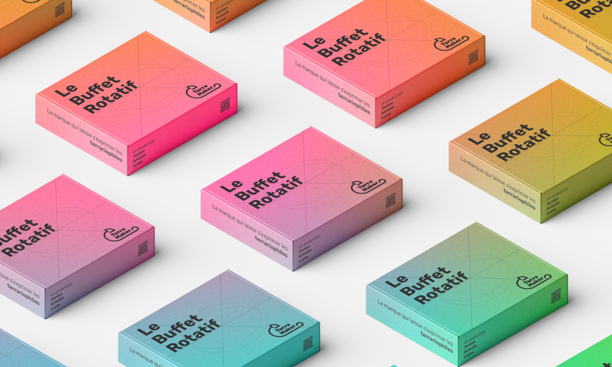
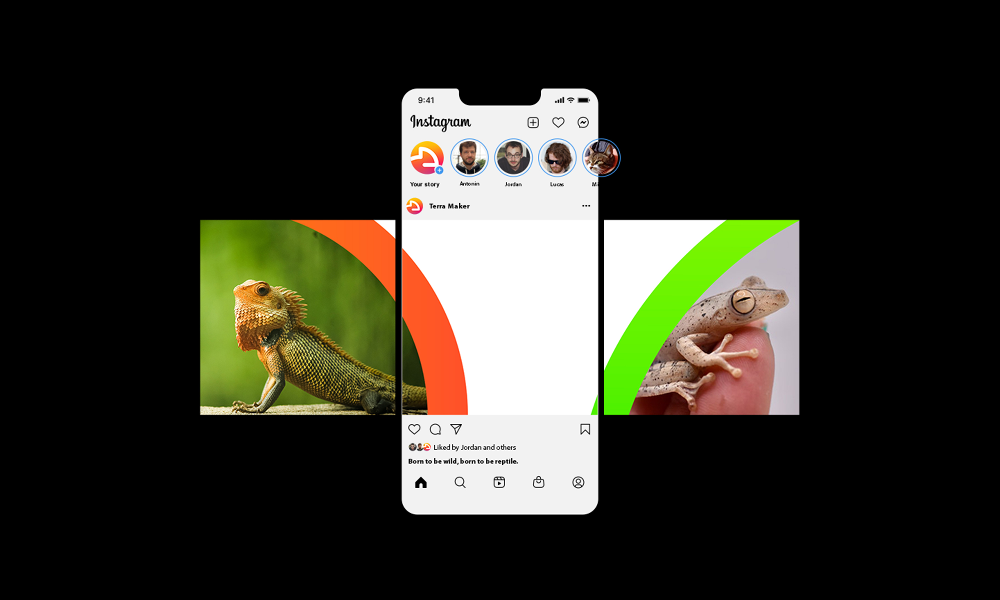
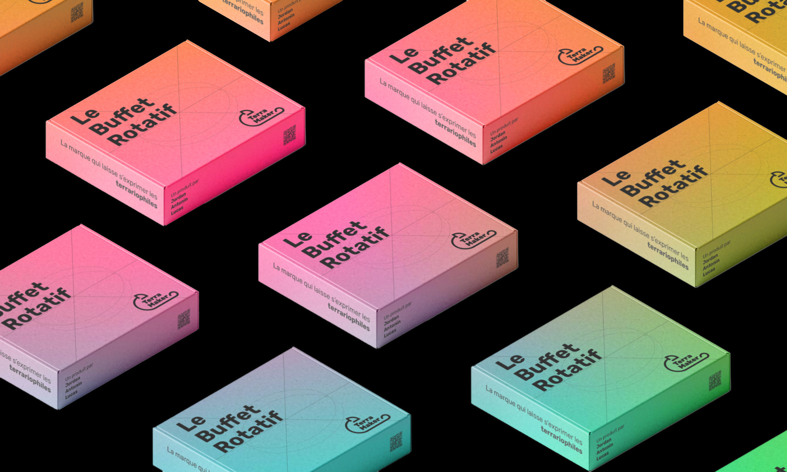

Terra Maker
Identité Visuelle
La marque qui laisse s’exprimer les terrariophiles.
Terra Maker, c’est avant tout une histoire d’amitié. Nous sommes début 2021. Jordan, doctorant en paléontologie spécialisé dans la locomotion des animaux, se décide à franchir le pas et achète son premier reptile, un caméléon casqué du Yémen, qu’il nomme Napoléon.
Se rendant compte qu’il n’existe aucune solution technique pour nourrir son reptile en son absence, il contacte ses amis d’enfance, Antonin et Lucas, respectivement ingénieur et concepteur industriel. Ensemble, ils mettent au point un premier prototype.
D'ailleurs le financement participatif est prévu pour la fin d'année 2023.
Une identité colorée
L'identité de la marque doit promouvoir un sentiment de proximité avec le client (notamment à travers les réseaux sociaux et le service client). L'équipe de Terra Maker aimait beaucoup la typographie gratuite que j'utilise sur mon site depuis plusieurs années, Rubik. Elle possède plusieurs graisses, sans empattement, avec des coins arrondis : cette typo est unique, moderne tout en restant élégante et nette.
Concernant les couleurs, je me suis inspiré de celles présentes chez le caméléon cité plus haut. Le vert, le rouge, le bleu... des couleurs vives ! D'ailleurs la couleur des caméléons varie en fonction de facteurs internes (état de santé, stress, etc.) et externes (température, ensoleillement).
Pour la forme du logo, j'ai préféré reprendre le symbole d'un caméléon, de façon minimaliste avec des coins arrondis en référence à la typographie choisie.
Année
Juillet 2023
Read in English 🇬🇧